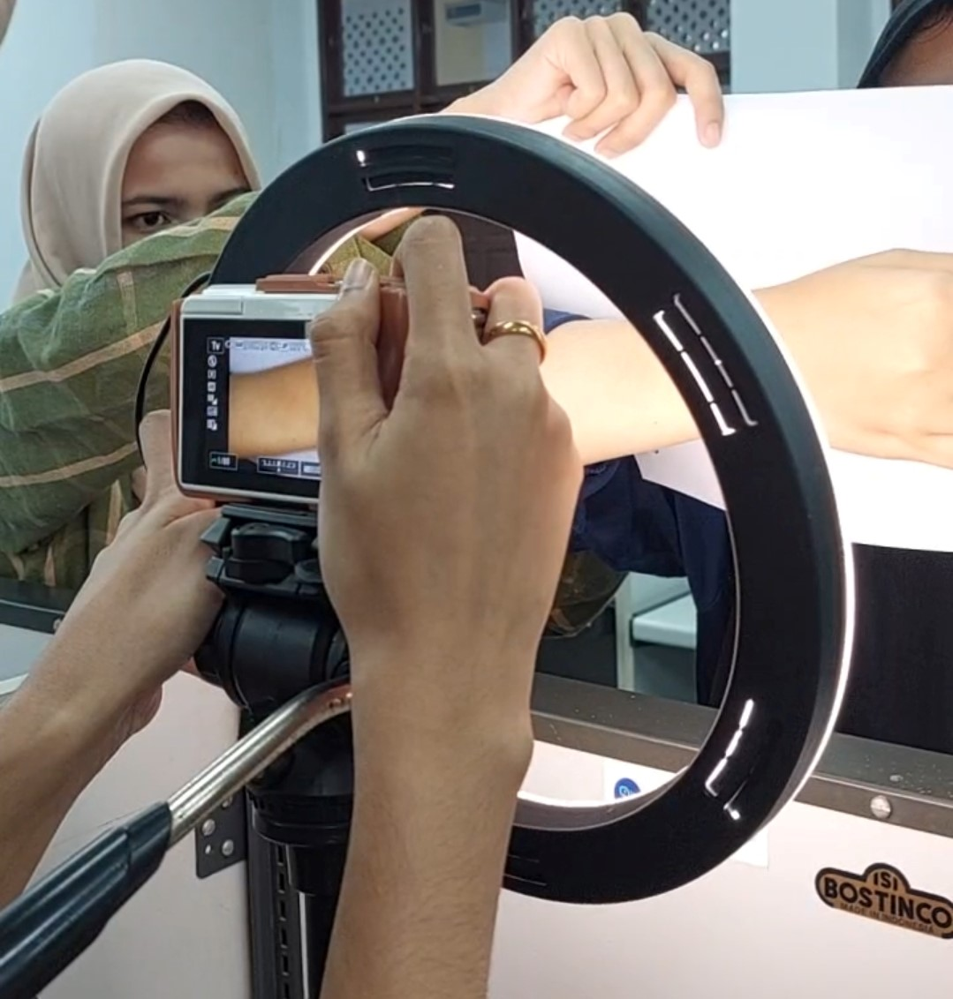

Normal
Normal
Normal

The skin is one of the parts that protects the human body, besides that it is the heaviest and widest
part of the body up to 15% of the human body weight with an area of 1.50 to 1.75m2.The classification
used for skin image recognition is to distinguish between normal skin images and diseased skin images in
the Basal Cell Carcinoma class using the ISIC 2018 dataset on the website https://challenge.isic-archive.com/data/#2018.
It's just that due to the unavailability of normal skin datasets (healthy skin) as a comparison, the dataset was created by taking skin objects directly
on volunteers. After conducting the research, the test results obtained were that the model built was
able to distinguish between normal skin classes and Basal Cell Carcinoma (sick skin) well,
where the accuracy of the CLAHE image results was superior compared to using the original image.
Native image yield for architecture VGG-16 is 98.3%, ResNet-34 is 97.5%, EfficientNet-B0 is 98.2% and
EfficientNet-B7 is 99.7%. Whereas in the CLAHE image, a higher accuracy value is obtained, namely for the
VGG-16 architecture of 100%, ResNet-34 of 99.5%, EfficientNet-B0 of 100% and EfficientNet-B7 of 100%.
We also introduce a novel dataset called USK-NORMAL SKIN which comes from
taking data from willing volunteers aged 21-60 years on the face, back of the hands
and forearms. Our goal is to address the unavailability of publications regarding normal
skin datasets or healthy skin classes. This image data will be collected manually by taking
pictures through a digital camera and collecting 170 images from 50 people, 25 male and 25 female.
This dataset can be used for two tasks, namely classification and detection for normal skin classes
that may be tested with diseased skin classes.
According to a report provided by the American Cancer Society, BCC is the most common type of skin disease in the United States. In Indonesia, BCC skin disease has been diagnosed since 1989 according to the Cancer Registration Agency of the Association of Indonesian Pathologists, namely 39.93% of 1,530 skin cancers in Indonesia. For this reason, a dataset of diseased and normal skin is required for the diagnosis made. It's just that, the skin image dataset that is published most often is the dataset for the sick class only. Meanwhile, datasets in normal or healthy classes are very difficult to find. In fact, if the dataset is widely published, research that will test by comparison of classes whether the skin is healthy or diseased will increase and facilitate the diagnosis process.  To classify normal and diseased skin, we use a deep learning approach. To achieve the best results, several CNN architectures such as ResNet34, VGG16, EfficientNet-b0, and EfficientNet-b0 are used to analyze the results. CNN is commonly used in the image processing and computer vision fields to recognize objects in images, classify image categories, and solve machine vision-related problems.
The tested architectures such as ResNet34, VGG16, EfficientNet-b0 and EfficientNet-b0 will be compared against each other. Each of these models has its own advantages in image classification. One thing these models have in common is that they are used for computer vision tasks, specifically the classification of images and objects. All of these models have proven successful in their tasks and are often used as benchmarks in computer vision research. The image size used has been modified to 224 x 224 pixels for all models tested from the original 600 x 450 pixels data.
USK-Normal Skin Dataset is a one of public datasets that is open for everyone. For detailed information about the dataset, please see the technical report linked below.
| Categories | Total | Dimensions |
|---|---|---|
| Normal | 170 | 224 x 224 pixels |
You can contact Ade Miftahul Jannah via ComvisLab or E-mail for question.
This is the following publications use our dataset. Please contact us if you are using our dataset and we will add your paper to the list.